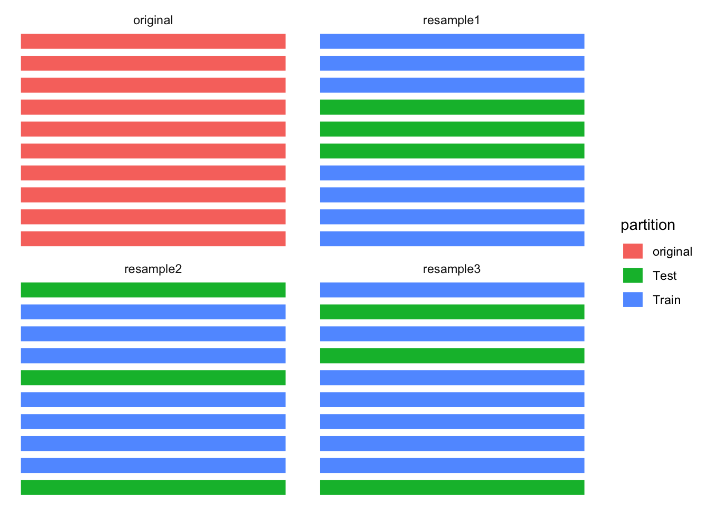
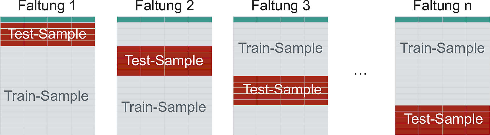
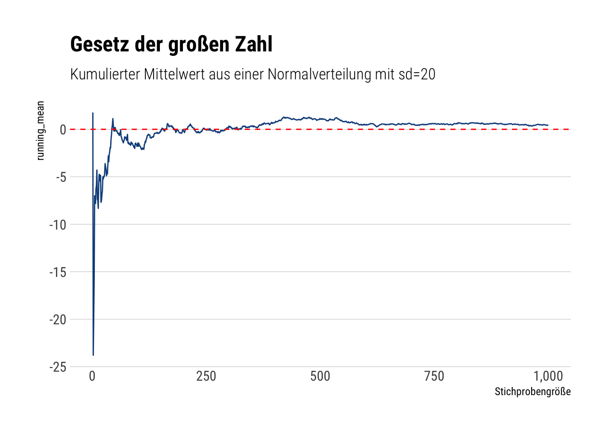

8 Resampling und Tuning
8.1 Lernsteuerung
8.1.1 Lernziele
- Sie verstehen den Nutzen von Resampling und Tuning im maschinellen Nutzen.
- Sie können Methoden des Resampling und Tunings mit Hilfe von Tidymodels anwenden.
8.1.2 Vorbereitung
- Lesen Sie die Literatur.
8.1.3 Literatur
- Rhys, Kap. 3
- TMWR, Kap. 10, 12
8.1.4 Benötigte R-Pakete
8.2 Überblick
Der Standardablauf des maschinellen Lernens ist in Abbildung 8.1 dargestellt. Eine alternative, hilfreich Abbildung findet sich hier in Kap. 10.2 in Silge und Kuhn (2022).
flowchart TD Gesamtdatensatz --> Split[In Train- und Test aufteilen] subgraph Fit[Für jeden Modellkandidaten i] subgraph Kand[Modellkandidat i] F[Fitte im Train-S] --> T[Teste im Assessment-S] end end Split --> Fit Fit --> Best[Bestimmte besten Kandidaten] Best --> lastFit[Fitte ihn im ganzen Train-S] lastFit --> test[Teste im Tes-S]
8.3 tidymodels
8.3.1 Datensatz aufteilen
8.3.2 Rezept, Modell und Workflow definieren
In gewohnter Weise definieren wir den Workflow mit einem kNN-Modell.
ames_rec <-
recipe(Sale_Price ~ ., data = ames_train) %>%
step_log(Sale_Price, base = 10) %>%
step_other(Neighborhood, threshold = .1) %>%
step_dummy(all_nominal()) %>%
step_zv(all_predictors())
knn_model <-
nearest_neighbor(
mode = "regression",
) %>%
set_engine("kknn")
ames_wflow <-
workflow() %>%
add_recipe(ames_rec) %>%
add_model(knn_model)Das kNN-Modell ist noch nicht berechnet, es ist nur ein “Rezept†erstellt:
knn_model
## K-Nearest Neighbor Model Specification (regression)
##
## Computational engine: kknnames_wflow
## ══ Workflow ════════════════════════════════════════════════════════════════════
## Preprocessor: Recipe
## Model: nearest_neighbor()
##
## ── Preprocessor ────────────────────────────────────────────────────────────────
## 4 Recipe Steps
##
## • step_log()
## • step_other()
## • step_dummy()
## • step_zv()
##
## ── Model ───────────────────────────────────────────────────────────────────────
## K-Nearest Neighbor Model Specification (regression)
##
## Computational engine: kknn8.4 Resampling
Vergleichen Sie die drei Fälle, die sich in der Nutzung von Train- und Test-Sample unterscheiden:
- Wir fitten ein Klassifikationsmodell in einer Stichprobe, sagen die Y-Werte dieser Stichprobe “vorher”. Wir finden eine Gesamtgenauigkeit von 80%.
- Wir fitten ein Klassifikationsmodell in einem Teil der ursprünglichen Stichprobe (Train-Sample) und sagen Y-die Werte im verbleibenden Teil der ursprünglichen Stichprobe vorher (Test-Sample). Wir finden eine Gesamtgenauigkeit von 70%.
- Wir wiederholen Fall 2 noch drei Mal mit jeweils anderer Zuweisung der Fälle zum Train- bzw. zum Test-Sample. Wir finden insgesamt folgende Werte an Gesamtgenauigkeit: 70%, 70%, 65%, 75%.
Welchen der drei Fälle finden Sie am sinnvollsten? Warum?
8.5 Illustration des Resampling
Resampling stellt einen Oberbegriff dar; Kreuzvalidierung ist ein Unterbegriff dazu. Es gibt noch andere Arten des Resampling, etwa Bootstrapping oder Leave-One-Out-Cross-Validation (LOOCV).
Im Folgenden ist nur die Kreuzvalidierung dargestellt, da es eines der wichtigsten und vielleicht das Wichtigste ist. In vielen Quellen finden sich Erläuterungen anderer Verfahren dargestellt, etwa in Silge und Kuhn (2022), James u. a. (2021) oder Rhys (2020).
8.5.1 Einfache v-fache Kreuzvalidierung
Abbildung 8.2 illustriert die zufällige Aufteilung von \(n=10\) Fällen der Originalstrichprobe auf eine Train- bzw. Test-Stichpobe. Man spricht von Kreuzvalidierung (cross validation, CV).
In diesem Fall wurden 70% der (\(n=10\)) Fälle der Train-Stichprobe zugewiesen (der Rest der Test-Stichprobe); ein willkürlicher, aber nicht unüblicher Anteil. Diese Aufteilung wurde \(v=3\) Mal vorgenommen, es resultieren drei “Resampling-Stichproben”, die manchmal auch als “Faltungen†bezeichnet werden.

Sauer (2019) stellt das Resampling so dar (S. 259), s. Abbildung 8.3.

Der Gesamtfehler der Vorhersage wird als Mittelwerte der Vorhersagefehler in den einzelnen Faltungen berechnet.
Warum ist die Vorhersage besser, wenn man mehrere Faltungen, mehrere Schätzungen für \(y\) also, vornimmt?
Der Grund ist das Gesetz der großen Zahl, nachdem sich eine Schätzung in Mittelwert und Variabilität stabilisiert mit steigendem Stichprobenumfang, dem wahren Mittelwert also präziser schätzt. Bei Normalverteilungen klappt das gut, bei randlastigen Verteilungen leider nicht mehr (Taleb 2019).
Häufig werden \(v=10\) Faltungen verwendet, was sich empirisch als guter Kompromiss von Rechenaufwand und Fehlerreduktion herausgestellt hat.
8.5.2 Wiederholte Kreuzvalidierung
Die \(r\)-fach wiederholte Kreuzvalidierung wiederholte die einfache Kreuzvalidierung mehrfach (nämlich \(r=4\) mal), Sauer (2019) stellt das Resampling so dar (S. 259), s. Abbildung 8.4.

Die wiederholte Kreuzvalidierung reduziert den Standardfehler der Vorhersagen.
Silge und Kuhn (2022) zeigen die Verringerung des Schätzfehlers als Funktion der \(r\) Wiederholungen dar, s. Abbildung 8.5.

Warum ist die Wiederholung der Kreuzvalidierung nützlich?
Die Kreuvalidierung liefert einen Schätzwert der Modellparameter, die wahren Modellparameter werden also anhand einer Stichprobe von \(n=1\) geschätzt. Mit höherem Stichprobenumfang kann diese Schätzung natürlich präzisiert werden.
Da jede Stichprobenverteilung bei \(n \rightarrow \infty\) normalverteilt ist - ein zentrales Theorem der Statistik, der Zentrale Grenzwertsatz (Central Limit Theorem) - kann man hoffen, dass sich eine bestimmte Stichprobenverteilung bei kleinerem \(n\) ebenfalls annähernd normalverteilt1. Dann sind die Quantile bekannt und man kann die Streuung der Schätzers, \({\sigma }_{\bar {x}}\), z.B. für den Mittelwert, einfach schätzen:
\[{\displaystyle {\sigma }_{\bar {x}}\ ={\frac {\sigma }{\sqrt {n}}}}\]
8.5.3 Resampling passiert im Train-Sample
Wichtig zu beachten ist, dass die Resampling nur im Train-Sample stattfindet. Das Test-Sample bleibt unangerührt. Dieser Sachverhalt ist in Abbildung 8.6, aus Silge und Kuhn (2022), illustriert.

Wie in Abbildung 8.6 dargestellt, wird das Modell im Analyse-Sample berechnet (gefittet), und im Assessment-Sample auf Modellgüte hin überprüft.
Die letztliche Modellgüte ist dann die Zusammenfassung (Mittelwert) der einzelnen Resamples.
8.5.4 Andere Illustrationen
Es gibt eine Reihe vergleichbarer Illustrationen in anderen Büchern:
- Timbers, Campbell & Lee, 2022, Kap. 6
- Silge & Kuhn, 2022, 10.1
- Silge & Kuhn, 2022, 10.2
- Silge & Kuhn, 2022, 10.3
- James, Witten, hastie & Tishirani, 2021, 5.3
{kind=link}
{kind=link}
{kind=link}
8.6 Gesetz der großen Zahl
Nach dem Gesetz der großen Zahl (Law of Large Numbers) sollte sich der Mittelwert einer großen Stichprobe dem theoretischen Mittelwert der zugrundeliegenden Verteilung (Population, datengeneriender Prozess) sehr nahe kommen.
\[\displaystyle \lim _{n\to \infty }\sum _{i=1}^{n}{\frac {X_{i}}{n}}={\overline {X}}\]
David Salazar visualisiert das folgendermaßen in diesem Post seines lesenswerten Blogs, s. Abbildung 8.7).
# source: https://david-salazar.github.io/2020/04/17/fat-vs-thin-does-lln-work/
samples <- 1000
thin <- rnorm(samples, sd = 20)
cumulative_mean <- function(numbers) {
x <- seq(1, length(numbers))
cum_mean <- cumsum(numbers)/x
cum_mean
}
thin_cum_mean <- cumulative_mean(thin)
thin_cum_mean %>%
tibble(running_mean = .) %>%
add_rownames(var = 'number_samples') %>%
mutate(number_samples = as.double(number_samples)) %>%
arrange(number_samples) %>%
ggplot(aes(x = number_samples, y = running_mean)) +
geom_line(color = 'dodgerblue4') +
geom_hline(yintercept = 0, linetype = 2, color = 'red') +
hrbrthemes::theme_ipsum_rc(grid = 'Y') +
scale_x_continuous(labels = scales::comma) +
labs(x = "Stichprobengröße",
title = "Gesetz der großen Zahl",
subtitle = "Kumulierter Mittelwert aus einer Normalverteilung mit sd=20")
Wie man sieht, nähert sich der empirische Mittelwert (also in der Stichprobe) immer mehr dem theoretischen Mittelwert, 0, an.
Achtung: Bei randlastigen Verteilungen darf man dieses schöne, wohlerzogene Verhalten nicht erwarten (Taleb 2019).
8.7 Über- und Unteranpassung an einem Beispiel

Abbildung 8.8 zeigt:
- Teil A: Die ‘wahre Funktion’, \(f\), die die Daten erzeugt. Man spricht auch von der “datengenerierenden Funktion”. Wir gehen gemeinhin davon aus, dass es eine wahre Funktion gibt. Das heißt nicht, dass die wahre Funktion die Daten perfekt erklärt, schließlich kann die Funktion zwar wahr, aber unvollständig sein oder unsere Messinstrumente sind nicht perfekt präzise.
- Teil B: Die Daten, erzeugt aus A plus etwas zufälliges Fehler (Rauschen).
- Teil C: Ein zu einfaches Modell: Unteranpassung. Vorhersagen in einer neuen Stichprobe (basierend auf dem datengenerierenden Prozess aus A) werden nicht so gut sein.
- Teil D: Ein zu komplexes Modell: Überanpassung. Vorhersagen in einer neuen Stichprobe (basierend auf dem datengenerierenden Prozess aus A) werden nicht so gut sein.
- Teil E: Ein Modell mittlerer Komplexität. Keine Überanpassung, keine Unteranpassung. Vorhersagen in einer neuen Stichprobe (basierend auf dem datengenerierenden Prozess aus A) werden gut sein.
8.8 CV in tidymodels
8.8.1 CV definieren
So kann man eine einfache v-fache Kreuzvalidierung in Tidymodels auszeichnen:
set.seed(2453)
ames_folds <- vfold_cv(ames_train, strata = "Sale_Price")
ames_foldsWerfen wir einen Blick in die Spalte splits, erste Zeile:
Möchte man die Defaults vpn vfold_cv wissen, schaut man in der Hilfe nach: ?vfold_cv:
vfold_cv(data, v = 10, repeats = 1, strata = NULL, breaks = 4, pool = 0.1, ...)
Probieren wir \(v=5\) und \(r=2\):
ames_folds_rep <- vfold_cv(ames_train,
strata = "Sale_Price",
v = 5,
repeats = 2)
ames_folds_rep8.8.2 Resamples fitten
Hat unser Computer mehrere Rechenkerne, dann können wir diese nutzen und die Berechnungen beschleunigen. Im Standard wird sonst nur ein Kern verwendet.
mycores <- parallel::detectCores(logical = FALSE)
mycores
## [1] 4Auf Unix/MacOC-Systemen kann man dann die Anzahl der parallen Kerne so einstellen2:
library(doMC)
registerDoMC(cores = mycores)So, und jetzt fitten wir die Resamples und trachten die Modellgüte in den Resamples:
ames_resamples_fit <-
ames_wflow %>%
fit_resamples(ames_folds)
ames_resamples_fit %>%
collect_metrics()Natürlich interessiert uns primär die Modellgüte im Test-Sample:
final_ames <-
last_fit(ames_wflow, data_split)final_ames %>%
collect_metrics()8.9 Tuning
8.9.1 Tuning auszeichnen
In der Modellspezifikation des Modells können wir mit tune() auszeichnen, welche Parameter wir tunen möchten. Wir könenn
Wir können dem Tuningparameter auch einen Namen (ID/Laben) geben, z.B. “K”:
8.9.2 Grid Search vs. Iterative Search
Im K-Nächste-Nachbarn-Modell ist der vorhergesagt Wert, \(\hat{y}\) für eine neue Beobachtung \(x_0\) wie folgt definiert:
\[ \hat y = \frac{1}{K}\sum_{\ell = 1}^K x_\ell^*, \]
wobei \(K\) die Anzahl der zu berücksichtigen nächsten Nachbarn darstellt und \(x_\ell^*\) die Werte dieser berücksichtiggten Nachbarn.
Die Wahl von \(K\) hat einen gewaltigen Einfluss auf die Vorhersagen und damit auf die Vorhersagegüte. Allerdings wird \(K\) nicht vom Modell geschätzt. Es liegt an den Nutzi, diesen Wert zu wählen.
Parameter dieser Art (die von den Nutzi zu bestimmen sind, nicht vom Algorithmus), nennt man Tuningparameter.
Abbildung Abbildung 8.9 aus Silge und Kuhn (2022) stellt exemplarisch dar, welchen großen Einfluss die Wahl des Werts eines Tuningparameters auf die Vorhersagen eines Modells haben.

Aber wie wählt man “gute†Werte der Tuningparater? Zwei Ansätze, grob gesprochen, bieten sich an.
Grid Search: Probiere viele Werte aus und schaue, welcher der beste ist. Dabei musst du hoffen, dass du die Werte erwischt, die nicht nur im Train-, sondern auch im Test-Sample gut funktionieren werden.
Iterative Search: Wenn du einen Wert eines Tuningparameters hast, nutze diesen, um intelligenter einen neuen Wert eines Tuningparameters zu finden.
Der Unterschied beider Ansätze ist in Silge und Kuhn (2022) wie in Abbildung 8.10 dargestellt.

In tidymodels kann man mit tune() angeben, dass man einen bestimmten Parameter tunen möchte. tidymodels führt das dann ohne weiteres Federlesens für uns durch.
8.10 Tuning mit Tidymodels
8.10.0.1 Tuningparameter betrachten
Möchte man wissen, welche und wie viele Tuningparameter tidymodels in einem Modell berücksichtigt, kann man extract_parameter_set_dials() aufrufen:
extract_parameter_set_dials(knn_model)Die Ausgabe informiert uns, dass es nur einen Tuningparameter gibt in diesem Modell und dass der Name (Label, ID) des Tuningparameters “K†ist. Außerdem sollen die Anzahl der Nachbarn getunt werden. Der Tuningparameter ist numerisch; das sieht man an nparam[+].
Schauen wir uns mal an, auf welchen Wertebereich tidymodels den Parameter \(K\) begrenzt hat:
knn_model %>%
extract_parameter_dials("K")
## # Nearest Neighbors (quantitative)
## Range: [1, 15]Aktualisieren wir mal unseren Workflow entsprechend:
ames_wflow <-
ames_wflow %>%
update_model(knn_model)Wir können auch Einfluss nehmen und angeben, dass die Grenzen des Wertebereichs zwischen 1 und 50 liegen soll (für den Tuningparameter neighbors):
ames_set <-
extract_parameter_set_dials(ames_wflow) %>%
update(K = neighbors(c(1, 50)))
ames_set8.10.1 Datenabhängige Tuningparameter
Manche Tuningparameter kann man nur bestimmen, wenn man den Datensatz kennt. So ist die Anzahl der Prädiktoren, mtry in einem Random-Forest-Modell sinnvollerweise als Funktion der Prädiktorenzahl zu wählen. Der Workflow kennt aber den Datensatz nicht. Daher muss der Workflow noch “finalisiert†oder “aktualisiert†werden, um den Wertebereich (Unter- und Obergrenze) eines Tuningparameters zu bestimmen.
Wenn wir im Rezept aber z.B. die Anzahl der Prädiktoren verändert haben, möchten wir die Grenzen des Wertebereichs für mtry (oder andere Tuningparameter) vielleicht nicht händisch, “hartverdrahtet†selber bestimmen, sondern lieber den Computer anweisen, und sinngemäß sagen: “Warte mal mit der Bestimmung der Werte der Tuningparameter, bis du den Datensatz bzw. dessen Dimensionen kennst. Merk dir, dass du, wenn du den Datensatz kennst, die Werte des Tuningparameter noch ändern musst. Und tu das dann auch.†Dazu später mehr.
ames_set <-
workflow() %>%
add_model(knn_model) %>%
add_recipe(ames_rec) %>%
extract_parameter_set_dials() %>%
finalize(ames_train)8.10.2 Modelle mit Tuning berechnen
Nachdem wir die Tuningwerte bestimmt haben, können wir jetzt das Modell berechnen: Für jeden Wert des Tuningparameters wird ein Modell berechnet:
ames_grid_search <-
tune_grid(
ames_wflow,
resamples = ames_folds
)
ames_grid_searchIm Default berechnet tiymodels 10 Kandidatenmodelle.
Die Spalte .metrics beinhaltet die Modellgüte für jedes Kandidatenmodell.
ames_grid_search %>%
collect_metrics()Das können wir uns einfach visualisieren lassen:
autoplot(ames_grid_search)
Auf Basis dieser Ergebnisse könnte es Sinn machen, noch größere Werte für \(K\) zu überprüfen.
8.10.3 Vorhersage im Test-Sample
Welches Modellkandidat war jetzt am besten?
show_best(ames_grid_search)Wählen wir jetzt mal das beste Modell aus (im Sinne des Optimierungskriteriusms):
select_best(ames_grid_search)Ok, notieren wir uns die Kombination der Tuningparameterwerte im besten Kandiatenmodell. In diesem Fall hat das Modull nur einen Tuningparameter:
ames_knn_best_params <-
tibble(K = 15)Unser Workflow weiß noch nicht, welche Tuningparameterwerte am besten sind:
ames_wflow
## ══ Workflow ════════════════════════════════════════════════════════════════════
## Preprocessor: Recipe
## Model: nearest_neighbor()
##
## ── Preprocessor ────────────────────────────────────────────────────────────────
## 4 Recipe Steps
##
## • step_log()
## • step_other()
## • step_dummy()
## • step_zv()
##
## ── Model ───────────────────────────────────────────────────────────────────────
## K-Nearest Neighbor Model Specification (regression)
##
## Main Arguments:
## neighbors = tune("K")
##
## Computational engine: kknnneighbors = tune("K") sagt uns, dass er diesen Parameter tunen will. Das haben wir jetzt ja erledigt. Wir wollen für das Test-Sample nur noch einen Wert, eben aus dem besten Kandidatenmodell, verwenden:
ames_final_wflow <-
ames_wflow %>%
finalize_workflow(ames_knn_best_params)
ames_final_wflow
## ══ Workflow ════════════════════════════════════════════════════════════════════
## Preprocessor: Recipe
## Model: nearest_neighbor()
##
## ── Preprocessor ────────────────────────────────────────────────────────────────
## 4 Recipe Steps
##
## • step_log()
## • step_other()
## • step_dummy()
## • step_zv()
##
## ── Model ───────────────────────────────────────────────────────────────────────
## K-Nearest Neighbor Model Specification (regression)
##
## Main Arguments:
## neighbors = 15
##
## Computational engine: kknnWie man sieht, steht im Workflow nichts mehr von Tuningparameter.
Wir können jetzt das ganze Train-Sample fitten, also das Modell auf das ganze Train-Sample anwenden - nicht nur auf ein Analysis-Sample. Und mit den dann resultierenden Modellkoeffizienten sagen wir das TestSample vorher:
final_ames_knn_fit <-
last_fit(ames_final_wflow, data_split)
final_ames_knn_fitHolen wir uns die Modellgüte:
collect_metrics(final_ames_knn_fit)8.11 Aufgaben
- Arbeiten Sie sich so gut als möglich durch diese Analyse zum Verlauf von Covid-Fällen
- Fallstudie zur Modellierung einer logististischen Regression mit tidymodels
- Fallstudie zu Vulkanausbrüchen
- Fallstudie Himalaya